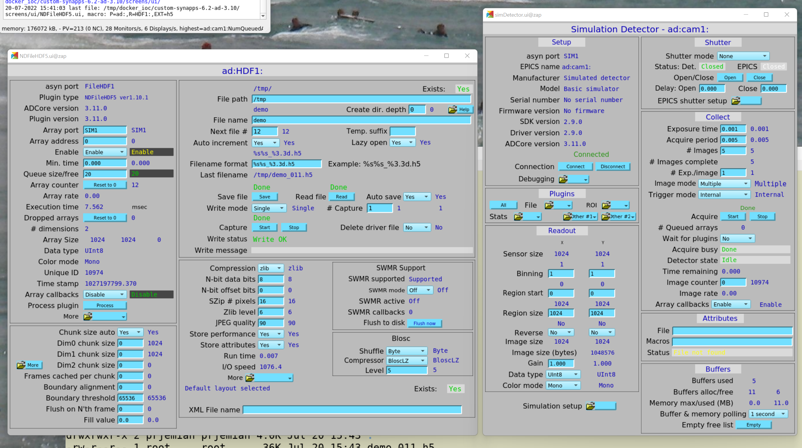

Area Detector, Single mode, HDF5 file#
Objective
The EPICS area detector software has a Single mode that reduces the configuration steps needed to acquire image frame(s) and output file(s). (EPICS Area Detector will write each frame to a separate file.)
Here, we show how to configure the EPICS controls, then acquire an image with bluesky and write it to an HDF5 file.
Contents
EPICS Area Detector IOC is pre-built
File Directories are different on IOC and bluesky workstation
ophyd to describe the hardware
bluesky for the measurement
databroker to view the image
punx (not part of Bluesky) to look at the HDF5 file
Recapitulation - rendition with no explanations
In other examples (such as AD with default file names or custom file names), we described the details of the area detector support. Refer to those examples for the details. Here, following the same general outline, we leverage that knowledge and proceed to the specifics for this example.
EPICS Area Detector IOC#
This example uses a prebuilt ADSimDetector driver, packaged in a docker image (prjemian/synapps). The EPICS IOC is configured with prefix ad: using the bash shell
script:
user@workstation:~$ iocmgr.sh start ADSIM ad
[1]:
IOC = "ad:"
File Directories#
Files from the IOC are mounted on the docker host in the directory /tmp/docker_ioc/iocad. The bluesky session runs on the docker host.
system |
file directory |
|---|---|
area detector IOC |
|
bluesky |
|
[2]:
import pathlib
# These paths are specific to how this IOC is implemented.
AD_IOC_MOUNT_PATH = pathlib.Path("/tmp")
BLUESKY_MOUNT_PATH = pathlib.Path("/tmp/docker_ioc/iocad/tmp")
Next, define some structures that we will use when constructing the detector object. The IMAGE_DIR describes our default choice for where to store image files. We can change this at run time by changing thearea detector file writer’s FilePath PV (before starting image acquisition).
[3]:
IMAGE_DIR = "example/%Y/%m/%d" # our choice for file arrangement
# MUST end with a `/`, pathlib will NOT provide it
WRITE_PATH_TEMPLATE = f"{AD_IOC_MOUNT_PATH / IMAGE_DIR}/"
READ_PATH_TEMPLATE = f"{BLUESKY_MOUNT_PATH / IMAGE_DIR}/"
ophyd#
Here’s a screen view of the configuration we want (HDF plugin on the left, cam plugin on the right):

Preparation#
Configure how matplotlib charts will be displayed in the notebook.
We’ll import additional libraries as needed by each of the following steps.
[4]:
# matplotlib graphics, choices include: inline, notebook, auto
%matplotlib inline
import matplotlib.pyplot as plt
plt.ion() # turn on matplotlib plots
[4]:
<matplotlib.pyplot._IonContext at 0x7fa2e7f64d30>
cam#
The cam Device describes the EPICS area detector camera driver for this detector. Here we use the SimDetectorCam (ADSimDetector) but you could use just about any other supported Cam instead.
[5]:
from apstools.devices import CamMixin_V34
from ophyd.areadetector import SimDetectorCam
class TheDetectorCam(CamMixin_V34, SimDetectorCam):
"""Revise SimDetectorCam for ADCore revisions."""
def __init__(self, *args, **kwargs):
super().__init__(*args, **kwargs)
self.stage_sigs.update(
dict(
acquire_time=0.01,
acquire_period=0.015, # a wee bit longer than acquire_time
num_images=1,
num_exposures=1, # Exp./image
wait_for_plugins="Yes",
array_callbacks="Enable",
)
)
HDF5#
The hdf1 Device describes the HDF5 File Writing plugin for this detector. With FileStoreHDF5SingleIterativeWrite, you will get a single HDF5 file for each frame you acquire (n frames, n files).
[6]:
from ophyd.areadetector.filestore_mixins import FileStoreHDF5SingleIterativeWrite
from ophyd.areadetector.plugins import HDF5Plugin_V34 as HDF5Plugin
import warnings
class CustomHDF5Plugin(FileStoreHDF5SingleIterativeWrite, HDF5Plugin):
"""
Add data acquisition methods to HDF5Plugin.
* ``stage()`` - prepare device PVs before data acquisition
* ``unstage()`` - restore device PVs after data acquisition
* ``generate_datum()`` - coordinate image storage metadata
"""
def __init__(self, *args, **kwargs):
super().__init__(*args, **kwargs)
self.stage_sigs.update(
dict(
array_callbacks="Disable",
auto_increment="Yes",
auto_save="Yes",
blocking_callbacks="No",
compression="zlib",
lazy_open="Yes",
store_perform="No",
zlevel=6,
)
)
# capture is not used with Single mode
# parent.cam.array_callbacks is staged once in the cam
# create_directory must be set before file_path, which is set before staging
remove_these = """
capture
array_counter
parent.cam.array_callbacks
create_directory
""".split()
for k in remove_these:
if k in self.stage_sigs:
self.stage_sigs.pop(k)
def stage(self):
# Again, do not press the Capture button in the HDF plugin
if "capture" in self.stage_sigs:
warnings.warn("Do not use capture with file_write_mode='Single'")
self.stage_sigs.pop("capture")
super().stage()
detector#
The detector class, a subclass of DetectorBase, brings together the detector driver cam and plugins.
[7]:
from apstools.devices import SingleTrigger_V34
from ophyd import ADComponent
from ophyd.areadetector import DetectorBase
from ophyd.areadetector.plugins import ImagePlugin_V34 as ImagePlugin
class CustomDetector(SingleTrigger_V34, DetectorBase):
"""
ADSimDetector
SingleTrigger:
* stop any current acquisition
* sets image_mode to 'Multiple'
"""
cam = ADComponent(TheDetectorCam, "cam1:")
hdf1 = ADComponent(
CustomHDF5Plugin,
"HDF1:",
write_path_template=WRITE_PATH_TEMPLATE,
read_path_template=READ_PATH_TEMPLATE,
)
image = ADComponent(ImagePlugin, "image1:")
With all the above setup, create the Python detector object, adsimdet and wait for it to connect with EPICS.
[8]:
adsimdet = CustomDetector(IOC, name="adsimdet")
adsimdet.wait_for_connection(timeout=15)
Check that all plugins used by the IOC have been defined in the Python structure. Expect that this function returns an empty list: [].
[9]:
adsimdet.missing_plugins()
[9]:
[]
We must configure adsimdet so the HDF5 plugin (by its attribute name hdf1) will be called during adsimdet.read(), as used by data acquisition.
[10]:
adsimdet.read_attrs.append("hdf1")
Configure the HDF5 plugin so it will create up to 5 subdirectories for the image directory.
[11]:
adsimdet.hdf1.create_directory.put(-5)
Prime the HDF5 plugin, if necessary.
[12]:
from apstools.devices import ensure_AD_plugin_primed
# this step is needed for ophyd
ensure_AD_plugin_primed(adsimdet.hdf1, True)
Check how adsim is staged (configured for data acquisition).
[13]:
adsimdet.stage_sigs
[13]:
OrderedDict([('cam.acquire', 0), ('cam.image_mode', 1)])
[14]:
# adsimdet.cam.stage_sigs["num_images"] = 1 # default is 1
adsimdet.cam.stage_sigs
[14]:
OrderedDict([('acquire_time', 0.01),
('acquire_period', 0.015),
('num_images', 1),
('num_exposures', 1),
('wait_for_plugins', 'Yes'),
('array_callbacks', 'Enable')])
[15]:
adsimdet.hdf1.stage_sigs
[15]:
OrderedDict([('enable', 1),
('blocking_callbacks', 'No'),
('auto_increment', 'Yes'),
('auto_save', 'Yes'),
('num_capture', 0),
('file_template', '%s%s_%6.6d.h5'),
('file_write_mode', 'Single'),
('array_callbacks', 'Disable'),
('compression', 'zlib'),
('lazy_open', 'Yes'),
('store_perform', 'No'),
('zlevel', 6)])
bluesky#
Within the Bluesky framework, bluesky is the package that orchestrates the data acquisition steps, including where to direct acquired data for storage. Later, we’ll use databroker to access the image data.
First, setup the RunEngine object RE.
[16]:
import bluesky
RE = bluesky.RunEngine()
databroker (as RunEngine subscriber)#
Setup the databroker (with a temporary databroker catalog) as a subscriber to the documents published from the bluesky RunEngine.
[17]:
import databroker
cat = databroker.temp().v2 # or use your own catalog: databroker.catalog["CATALOG_NAME"]
cat = databroker.catalog["training"]
RE.subscribe(cat.v1.insert)
[17]:
0
Take an image with the area detector
Finally, we are ready to acquire an image. We’ll use the standard bluesky count() plan. Also add some metadata about this image.
[18]:
import bluesky.plans as bp
uids = RE(
bp.count([adsimdet],
md=dict(
title="Area Detector, Single mode, HDF5 file",
purpose="image")
)
)
databroker#
Here we show how to access and display the acquired image using databroker as the interface to the data files and run metadata.
First, find the run we just acquired. We’ll index to that run using the uid returned by the above call to RE().
[19]:
run = cat.v2[uids[0]]
run
[19]:
BlueskyRun
uid='6780800e-b08a-4933-bf26-8618b3fb53ed'
exit_status='success'
2022-09-30 16:31:38.860 -- 2022-09-30 16:31:38.965
Streams:
* primary
Get the image frame from the run
Combining several steps into one line, extract the image frame from the run. We know the image data is in the primary stream, that the image is recorded under the name "adsimdet_image" (or adsimdet.image.name), and the image frame is the last two indices.
Import hdf5plugin, a library that supports advanced compression modes for data in HDF5 files. (We don’t have to call any of its modules directly. The import hdf5plugin will install entry points needed when the supported compression modes are called.) We did not need this previously since it was the IOC that wrote the HDF5 file with the chosen compression mode.
NOTE: Any Python client that reads data compressed with these compression modes will also need to import the hdf5plugin library, or provide alternative support.
NOTE: Make sure you are using at least version 0.0.10 (or higher) of the area-detector-handlers for an important bugfix relating to how databroker will read these HDF5 files.
[20]:
import hdf5plugin # required for LZ4, Blosc, and other compression codecs
frame = run.primary.read()[adsimdet.image.name][0][0]
frame
[20]:
<xarray.DataArray 'adsimdet_image' (dim_1: 1024, dim_2: 1024)>
array([[ 9, 10, 11, ..., 6, 7, 8],
[10, 11, 12, ..., 7, 8, 9],
[11, 12, 13, ..., 8, 9, 10],
...,
[ 6, 7, 8, ..., 3, 4, 5],
[ 7, 8, 9, ..., 4, 5, 6],
[ 8, 9, 10, ..., 5, 6, 7]], dtype=uint8)
Coordinates:
time float64 1.665e+09
Dimensions without coordinates: dim_1, dim_2
Attributes:
object: adsimdetVisualize the image#
The frame is an xarray Dataset, which has a method to visualize the data as shown here:
[21]:
frame.plot.pcolormesh()
[21]:
<matplotlib.collections.QuadMesh at 0x7fa2623cedc0>
Where is the image file on disk?#
So far, we have not had to know the name of the file on disk with the image data. Still, we can learn about that from the run’s metadata, by querying one of its internal structures.
[22]:
rsrc = run.primary._resources[0]
rsrc
[22]:
Resource({'path_semantics': 'posix',
'resource_kwargs': {'filename': '62e73032-4d57-4e37-b784',
'frame_per_point': 1,
'template': '%s%s_%6.6d.h5'},
'resource_path': 'tmp/docker_ioc/iocad/tmp/example/2022/09/30',
'root': '/',
'run_start': '6780800e-b08a-4933-bf26-8618b3fb53ed',
'spec': 'AD_HDF5_SINGLE',
'uid': 'e00f8f86-4dbe-46c1-959e-3d504986b7f5'})
This information has shown the path to the image file as seen from the bluesky workstation’s file system. We can parse this structure for the file name. In this case, the file is found since the resource_path is written relative to the READ_PATH_TEMPLATE defined above. It takes a bit of work to re-assemble the file name.
This is an important distinction since the IOC and bluesky see the same file on different directory paths, as described above.
[23]:
file_name = pathlib.Path(
rsrc["resource_kwargs"]["template"] % (
f"{rsrc['root']}{rsrc['resource_path']}/",
rsrc["resource_kwargs"]["filename"],
rsrc["resource_kwargs"]["frame_per_point"] - 1
)
)
print(f"{file_name.exists()=}\n{file_name=}")
file_name.exists()=True
file_name=PosixPath('/tmp/docker_ioc/iocad/tmp/example/2022/09/30/62e73032-4d57-4e37-b784_000000.h5')
Alternatively, get the name of the image file on the bluesky (local) workstation from the adsimdet object.
NOTE: This method relies on information currently defined in EPICS, via the adsimdet.hdf1, so it may not be successful if the HDF plugin has been changed since the image was acquired.
[24]:
from apstools.devices import AD_full_file_name_local
local_file_name = AD_full_file_name_local(adsimdet.hdf1)
print(f"{local_file_name.exists()=}\n{local_file_name=}")
local_file_name == file_name # compare the two names
local_file_name.exists()=True
local_file_name=PosixPath('/tmp/docker_ioc/iocad/tmp/example/2022/09/30/62e73032-4d57-4e37-b784_000000.h5')
[24]:
True
punx#
Next, we demonstrate access to the HDF5 image file using the punx program, showing the tree structure of the data file (the image data may be found at HDF5 address /entry/data/data, another reference to the exact same data is found at /entry/instrument/detector/data):
[25]:
from apstools.utils import unix
for line in unix(f"punx tree {file_name}"):
print(line.decode().strip())
!!! WARNING: this program is not ready for distribution.
/tmp/docker_ioc/iocad/tmp/example/2022/09/30/62e73032-4d57-4e37-b784_000000.h5 : NeXus data file
entry:NXentry
@NX_class = "NXentry"
data:NXdata
@NX_class = "NXdata"
data:NX_UINT8[1024,1024] = __array
__array = [
[9, 10, 11, '...', 8]
[10, 11, 12, '...', 9]
[11, 12, 13, '...', 10]
...
[8, 9, 10, '...', 7]
]
@NDArrayDimBinning = [1 1]
@NDArrayDimOffset = [0 0]
@NDArrayDimReverse = [0 0]
@NDArrayNumDims = 2
@signal = 1
instrument:NXinstrument
@NX_class = "NXinstrument"
NDAttributes:NXcollection
@NX_class = "NXcollection"
@hostname = "zap"
NDArrayEpicsTSSec:NX_UINT32 = 1033421498
@NDAttrDescription = "The NDArray EPICS timestamp seconds past epoch"
@NDAttrName = "NDArrayEpicsTSSec"
@NDAttrSource = "Driver"
@NDAttrSourceType = "NDAttrSourceDriver"
NDArrayEpicsTSnSec:NX_UINT32 = 913238900
@NDAttrDescription = "The NDArray EPICS timestamp nanoseconds"
@NDAttrName = "NDArrayEpicsTSnSec"
@NDAttrSource = "Driver"
@NDAttrSourceType = "NDAttrSourceDriver"
NDArrayTimeStamp:NX_FLOAT64 = 1033421498.9031079
@NDAttrDescription = "The timestamp of the NDArray as float64"
@NDAttrName = "NDArrayTimeStamp"
@NDAttrSource = "Driver"
@NDAttrSourceType = "NDAttrSourceDriver"
NDArrayUniqueId:NX_INT32 = 1033
@NDAttrDescription = "The unique ID of the NDArray"
@NDAttrName = "NDArrayUniqueId"
@NDAttrSource = "Driver"
@NDAttrSourceType = "NDAttrSourceDriver"
detector:NXdetector
@NX_class = "NXdetector"
data:NX_UINT8[1024,1024] = __array
__array = [
[9, 10, 11, '...', 8]
[10, 11, 12, '...', 9]
[11, 12, 13, '...', 10]
...
[8, 9, 10, '...', 7]
]
@NDArrayDimBinning = [1 1]
@NDArrayDimOffset = [0 0]
@NDArrayDimReverse = [0 0]
@NDArrayNumDims = 2
@signal = 1
NDAttributes:NXcollection
@NX_class = "NXcollection"
ColorMode:NX_INT32 = 0
@NDAttrDescription = "Color mode"
@NDAttrName = "ColorMode"
@NDAttrSource = "Driver"
@NDAttrSourceType = "NDAttrSourceDriver"
performance
Recapitulation#
Let’s gather the above parts together as one would usually write code.
# matplotlib graphics, choices include: inline, notebook, auto
%matplotlib auto
from apstools.devices import ensure_AD_plugin_primed
from apstools.devices import CamMixin_V34
from apstools.devices import SingleTrigger_V34
import hdf5plugin # required for LZ4, Blosc, and other compression codecs
from ophyd import ADComponent
from ophyd.areadetector import DetectorBase
from ophyd.areadetector import SimDetectorCam
from ophyd.areadetector.filestore_mixins import FileStoreHDF5SingleIterativeWrite
from ophyd.areadetector.plugins import HDF5Plugin_V34 as HDF5Plugin
from ophyd.areadetector.plugins import ImagePlugin_V34 as ImagePlugin
import bluesky
import bluesky.plans as bp
import databroker
import matplotlib.pyplot as plt
import pathlib
import warnings
plt.ion() # turn on matplotlib plots
RE = bluesky.RunEngine()
cat = databroker.temp().v2
# or use your own catalog like this example:
# cat = databroker.catalog["training"]
RE.subscribe(cat.v1.insert)
IOC = "ad:"
# These paths are specific to how this IOC is implemented.
AD_IOC_MOUNT_PATH = pathlib.Path("/tmp")
BLUESKY_MOUNT_PATH = pathlib.Path("/tmp/docker_ioc/iocad/tmp")
IMAGE_DIR = "example/%Y/%m/%d" # our choice for file arrangement
# MUST end with a `/`, pathlib will NOT provide it
WRITE_PATH_TEMPLATE = f"{AD_IOC_MOUNT_PATH / IMAGE_DIR}/"
READ_PATH_TEMPLATE = f"{BLUESKY_MOUNT_PATH / IMAGE_DIR}/"
class TheDetectorCam(CamMixin_V34, SimDetectorCam):
"""Revise SimDetectorCam for ADCore revisions."""
def __init__(self, *args, **kwargs):
super().__init__(*args, **kwargs)
self.stage_sigs.update(
dict(
acquire_time=0.01,
acquire_period=0.015, # a wee bit longer than acquire_time
num_images=1,
num_exposures=1, # Exp./image
wait_for_plugins="Yes",
array_callbacks="Enable",
)
)
class CustomHDF5Plugin(FileStoreHDF5SingleIterativeWrite, HDF5Plugin):
"""
Add data acquisition methods to HDF5Plugin.
* ``stage()`` - prepare device PVs before data acquisition
* ``unstage()`` - restore device PVs after data acquisition
* ``generate_datum()`` - coordinate image storage metadata
"""
def __init__(self, *args, **kwargs):
super().__init__(*args, **kwargs)
self.stage_sigs.update(
dict(
array_callbacks="Disable",
auto_increment="Yes",
auto_save="Yes",
blocking_callbacks="No",
compression="zlib",
lazy_open="Yes",
store_perform="No",
zlevel=6,
)
)
# capture is not used with Single mode
# parent.cam.array_callbacks is staged once in the cam
# create_directory must be set before file_path, which is set before staging
remove_these = """
capture
array_counter
parent.cam.array_callbacks
create_directory
""".split()
for k in remove_these:
if k in self.stage_sigs:
self.stage_sigs.pop(k)
def stage(self):
# Again, do not press the Capture button in the HDF plugin
if "capture" in self.stage_sigs:
warnings.warn("Do not use capture with file_write_mode='Single'")
self.stage_sigs.pop("capture")
super().stage()
class CustomDetector(SingleTrigger_V34, DetectorBase):
"""
ADSimDetector
SingleTrigger:
* stop any current acquisition
* sets image_mode to 'Multiple'
"""
cam = ADComponent(TheDetectorCam, "cam1:")
hdf1 = ADComponent(
CustomHDF5Plugin,
"HDF1:",
write_path_template=WRITE_PATH_TEMPLATE,
read_path_template=READ_PATH_TEMPLATE,
)
image = ADComponent(ImagePlugin, "image1:")
adsimdet = CustomDetector(IOC, name="adsimdet")
adsimdet.wait_for_connection(timeout=15)
adsimdet.missing_plugins()
adsimdet.read_attrs.append("hdf1")
adsimdet.hdf1.create_directory.put(-5)
NUM_FRAMES = 1
adsimdet.cam.stage_sigs["num_frames"] = NUM_FRAMES
# this step is needed for ophyd
ensure_AD_plugin_primed(adsimdet.hdf1, True)
uids = RE(
bp.count([adsimdet],
md=dict(
title="Area Detector, Single mode, HDF5 file",
purpose="image")
)
)
run = cat.v2[uids[0]]
frame = run.primary.read()[adsimdet.image.name][0][0]
frame.plot.pcolormesh() # show the image